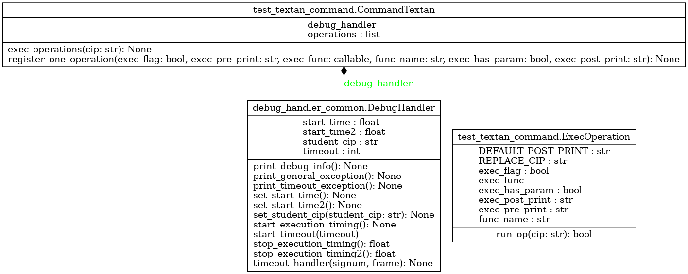

Module test_textan_command
Diagramme de classe
{kind=link}
Code du module
Code utilitaire pour implémenter le patron de conception « command », utilisé dans test_textan.py
Copyright 2024-2025 F. Mailhot et Université de Sherbrooke
- class test_textan_command.CommandTextan[source]
Bases :
objectClasse qui implémente le patron de conception « command » :
Permet de prédéfinir l’ordre des méthodes à appeler, puis d’en faire l’exécution
Copyright 2024-2025, F. Mailhot et Université de Sherbrooke
Constructeur pour la classe CommandTextan. Initialisation de l’ensemble des éléments requis
- Args :
(void) : Le constructeur initialise l’objet CommandTextan
- Returns :
(void) : Au retour, la nouvelle instance est prête à être utilisée
- exec_operations(cip: str) None[source]
Appelle dans l’ordre la série de méthodes enregistrées dans le champ self.operations
- Args :
cip (string) : Le ou les CIPs des membres de l’équipe dont le code est exécuté
- Returns :
void : Rien n’est retourné : au retour, l’ensemble des méthodes a été exécuté
- register_one_operation(exec_flag: bool, exec_pre_print: str, exec_func: callable, func_name: str, exec_has_param: bool, exec_post_print: str) None[source]
- Enregistre une méthode à exécuter pour vérifier le code.
Les enregistrements doivent être faits dans l’ordre dans lequel leur exécution doit s’effectuer
- Args :
exec_flag (bool) : Indique si cette méthode doit être exécutée ou non exec_pre_print (string) : Message à imprimer avant l’exécution exec_func (callable) : Méthode à exécuter func_name (string) : Nom de la fonction à appeler et courte explication exec_has_param (bool) : Indique si la méthode exec_func doit utiliser un paramètre ou non (le cip) exec_post_print (string) : Message à imprimer après l’exécution de la méthode
- Returns :
void : Rien n’est retourné : au retour, la méthode a été enregistrée
- class test_textan_command.ExecOperation(exec_flag: bool, exec_pre_print: str, exec_func: callable, func_name: str, exec_has_param: bool, exec_post_print: str)[source]
Bases :
objectClasse qui définit les opérations à effectuer par la classe CommandTextan :
Permet de définir les méthodes à exécuter et les commentaires à imprimer avant et/ou après l’exécution
Copyright 2024-2025, F. Mailhot et Université de Sherbrooke
Constructeur pour la classe ExecOperation : Prépare l’exécution d’une commande
- Args :
exec_flag (bool) : Indique que cette méthode doit être exécutée exec_pre_print (str) : Message à imprimer avant l’exécution exec_func (callable) : Méthode à exécuter exec_has_param (bool) : La méthode utilise un paramètre (le cip) qui est passé en paramètre exec_post_print (str) : Message à imprimer après l’exécution
- Returns :
(void) : Au retour, la nouvelle instance d’exécution de commande est prête à être utilisée
- DEFAULT_POST_PRINT = '\tExécution'
- REPLACE_CIP = 'X_CIP_X'
Note
Documentation créée le 20 févr. 2025.